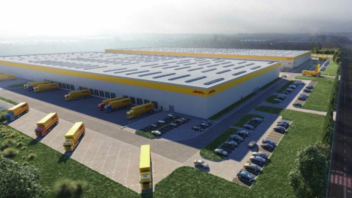

DHL en Europa es un actor clave en logística y mensajería, ofreciendo servicios a través de sus divisiones DHL Express, DHL Global Forwarding, DHL Supply Chain y DHL eCommerce Solutions. Con una sólida red de transporte terrestre y aéreo, DHL conecta prácticamente todos los países de Europa, facilitando entregas rápidas y soluciones de cadena de suministro avanzadas. En línea con sus metas de sostenibilidad, DHL está implementando vehículos eléctricos y optimizando sus centros de distribución para reducir su huella de carbono en el continente.
